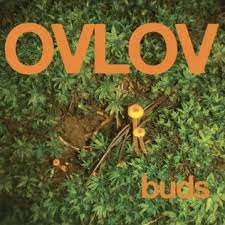

ᎳhᎪᏆ's uᏢ mᎽ bᏒᎾᏆhᎪ Ꭵ Ꭺm ᎪbᎾuᏆ ᏆᎾ ᏞᎪᎽ ᎾᏁ ᏆᎾᎾ ᎽᎾu ᏆhᎬ mᎾsᏆ musᎥᏟᎪᏞ ᎪᏞbum ᏆᎾ ᎠᎪᏆᎬ. ᏆhᎬ ᏁᎪmᎬ Ꮎf ᏆhᎥs ᎳᎥᏃᎥᏟᎪᏞ ᎪᏞbumᎥs buᎠs bᎽ ᎾᏉᏞᎾᏉ.

Ovlov is an American rock band from Newtown, Connecticut. The band is led by guitarist/vocalist Steve Hartlett, usually accompanying him, his brothers Theo and Jon on drums and bass, respectively, and guitarist Morgan Luzzi.
buds is the third studio album by American band Ovlov. It was released on November 19, 2021, by Exploding in Sound Recordings.